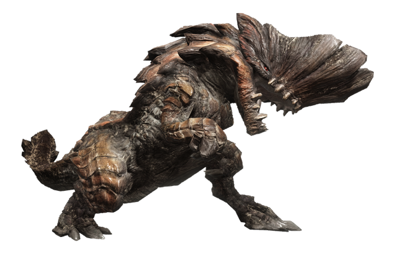

Yermo de Agujas (Wildspire Waste)
El Yermo de Agujas es una zona de Monster World caracterizada por su paisaje árido y hostil, donde predominan las formaciones rocosas puntiagudas y un terreno difícil de atravesar. Su entorno desolado contrasta con la presencia de criaturas que han logrado adaptarse a las duras condiciones del lugar, convirtiéndolo en un territorio lleno de peligros y desafíos para los aventureros.
| Dificultad: | ⭐⭐ |
| Categorias | LR-Low Rank |
| Entorno | Zona arida y montañosa |
| Temperatura | Calor extremo y vientos aridos |

Kulu-Ya-Ku
| Dificultad | ⭐⭐ |
| Categorias | LR:Low rank |
| Especie | Bird Wyvern |
| Elemento | None |
| Efectos Inflingidos | Stun |
| Debilidad | Water |
| Resistencia | None |
| Habitat | Wildspire Waste |
| Tamaño(en cm) | 793.09 - 1739.39 |
El Kulu-Ya-Ku es un curioso y nomada Bird Wyvern, destaca por su plumaje tan peculiar y brillante como su comportamiento. Acostumbra a sujetar objetos de su entorno como rocas, pedruscos, nuezes para atacar y defenderse, asi como, en la jerarquia de las criaturas monstruosas esta en lo más bajo aunque lo compensa con su alta velocidad e ingenuidad para sobrevivir de los cazadores
Editar Eliminar
Barroth
| Dificultad | ⭐⭐⭐ |
| Categorias | LR:Low rank |
| Especie | Brute Wyvern |
| Elemento | None |
| Efectos Inflingidos | Stun |
| Debilidad | Fire |
| Resistencia | Ninguna |
| Habitat | Wildspire Waste |
| Tamaño(en cm) | 1217.10 - 3153.40 |
A pesar de un enorme tamaño este Brute Wyvern tiene un curioso deseo por alimentarse de hormigas les encanta marcar su territorio con barro y a ellos mismos tambien por lo que supone un gran desafio para los cazadores afrontar su pseudo-armadura de lodo como sus ataques con lodo.
Editar Eliminar
Jyuratodus
| Dificultad | ⭐⭐ |
| Categorias | HR:High rank |
| Especie | Piscine Wyvern |
| Elemento | Water |
| Efectos inflingidos | Waterblight |
| Debilidad | Thunder |
| Resistencia | Water |
| Habitat | Yermo de Agujas |
| Tamaño(en cm) | 1327.66 - 1885.89 |
Este Piscine Wyvern que habita en los pantanos de Wildspire Waste cuenta con un recubrimiento de lodo dentro de estos pantanos es más ágil y feroz ya que puede tanto esconderse de los cazadores como disparar proyectiles de lodo, debido a esto sera esencial la estrategia y la paciencia.
Editar Eliminar
Black Diablos
| Dificultad | ⭐⭐⭐ |
| Categorias | HR:High rank |
| Especie | Flying Wyvern |
| Elemento | None |
| Efectos inflingidos | Stun |
| Debilidad | Ice |
| Resistencia | Dragon |
| Habitat | Yermo de Agujas |
| Tamaño(en cm) | 1844.70 - 2620.31 |
Una enorme Flying Wyvern extremadamente rapida, agresiva y hostil hacia las cualquier criatura que hose cruzar sus dominios, particularmente durante su fase de apareamiento sus hostilidad aumenta todavia más, es importante mencionar que esta criatura es capaz de sumergirse en la arena para luego emerger y caer encima de sus presas.
Editar Eliminar
Glavenus
| Dificultad | ⭐⭐⭐⭐⭐ |
| Categorias | LR:M rank |
| Especie | Brute Wyvern |
| Elemento | Fuego |
| Efectos inflingidos | Fireblight |
| Debilidad | Water |
| Resistencia | Thunder |
| Habitat | Wildspire Waste |
| Tamaño(en cm) | 2166.12 - 3003.03 |
Un gigantesco Brute Wyvern con una habitual costumbre de afilar su cola con frontandola con sus mandibulas, ataca a las demás criaturas y cazadores con su afilada cola como su se tratase de una espada con tajos y estocadas, además es capaz de acumular magma en su boca para despues escupir proyectiles de fuego explosivo.
Editar Eliminar